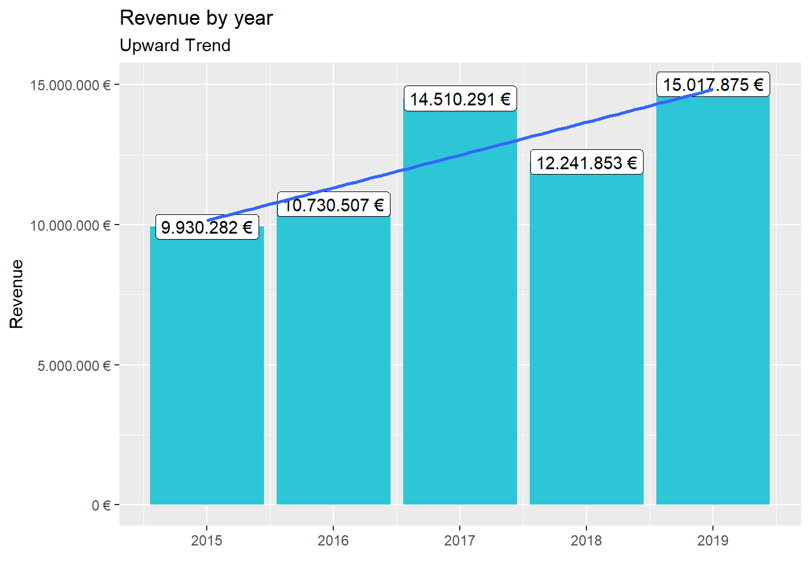
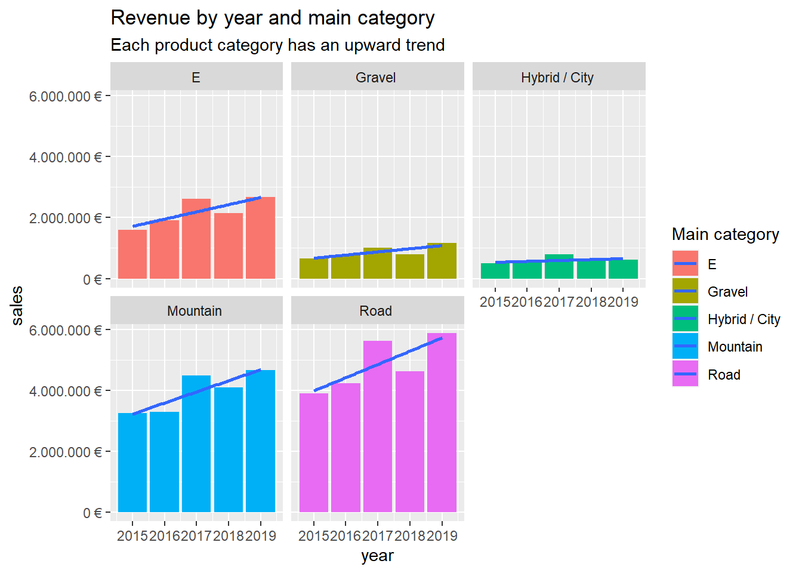
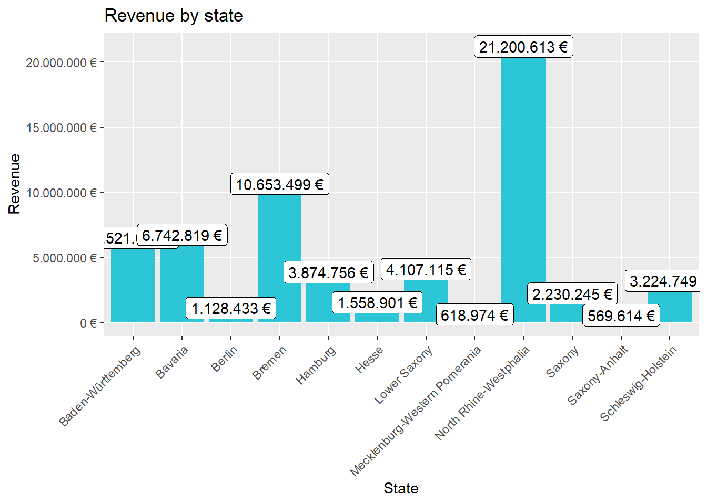
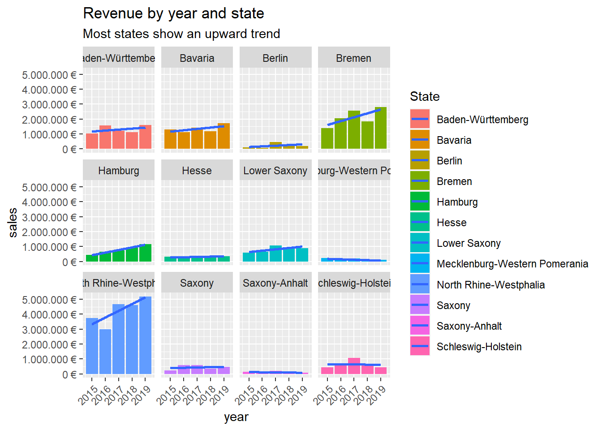

Last compiled: 2021-05-02
Load the necessary libraries at the beginning.
library(tidyverse)
# Excel Files
library(readxl)Load the bike sales data and store into objects.
bike_orderlines_joined_tbl <- orderlines_tbl %>%
left_join(bikes_tbl, by = c("product.id" = "bike.id")) %>%
left_join(bikeshops_tbl, by = c("customer.id" = "bikeshop.id"))bike_orderlines_wrangled_tbl <- bike_orderlines_joined_tbl %>%
# 5.1 Separate category name
separate(col = category,
into = c("category.1", "category.2", "category.3"),
sep = "-") %>%
# 5.2 Add the total price (price * quantity)
# Add a column to a tibble that uses a formula-style calculation of other columns
mutate(total.price = price * quantity) %>%
# 5.3 Optional: Reorganize. Using select to grab or remove unnecessary columns
# 5.3.1 by exact column name
select(-...1, -gender) %>%
# 5.3.2 by a pattern
select(-ends_with(".id")) %>%
# 5.3.3 Actually we need the column "order.id". Let's bind it back to the data
bind_cols(bike_orderlines_joined_tbl %>% select(order.id)) %>%
# 5.3.4 You can reorder the data by selecting the columns in your desired order.
select(order.id, contains("order"), contains("model"), contains("category"),
price, quantity, total.price,
everything()) %>%
# 5.4 Rename columns because we actually wanted underscores instead of the dots
# (one at the time vs. multiple at once)
rename(bikeshop = name) %>%
set_names(names(.) %>% str_replace_all("\\.", "_"))# 6.0 Business Insights ----
# 6.1 Sales by Year ----
library(lubridate)
# Step 1 - Manipulate
sales_by_year_tbl <- bike_orderlines_wrangled_tbl %>%
# Select columns
select(order_date, total_price) %>%
# Add year column
mutate(year = year(order_date)) %>%
# Grouping by year and summarizing sales
group_by(year) %>%
summarize(sales = sum(total_price)) %>%
# Optional: Add a column that turns the numbers into a currency format
# (makes it in the plot optically more appealing)
# mutate(sales_text = scales::dollar(sales)) <- Works for dollar values
mutate(sales_text = scales::dollar(sales, big.mark = ".",
decimal.mark = ",",
prefix = "",
suffix = " €"))
sales_by_year_tbl# Step 2 - Visualize
sales_by_year_tbl %>%
# Setup canvas with the columns year (x-axis) and sales (y-axis)
ggplot(aes(x = year, y = sales)) +
# Geometries
geom_col(fill = "#2DC6D6") + # Use geom_col for a bar plot
geom_label(aes(label = sales_text)) + # Adding labels to the bars
geom_smooth(method = "lm", se = FALSE) + # Adding a trendline
# Formatting
# scale_y_continuous(labels = scales::dollar) + # Change the y-axis.
# Again, we have to adjust it for euro values
scale_y_continuous(labels = scales::dollar_format(big.mark = ".",
decimal.mark = ",",
prefix = "",
suffix = " €")) +
labs(
title = "Revenue by year",
subtitle = "Upward Trend",
x = "", # Override defaults for x and y
y = "Revenue"
)
# 6.2 Sales by Year and Category 1 ----
# Step 1 - Manipulate
sales_by_year_cat_1_tbl <- bike_orderlines_wrangled_tbl %>%
# Select columns and add a year
select(order_date, total_price, category_1) %>%
mutate(year = year(order_date)) %>%
# Group by and summarize year and main catgegory
group_by(year, category_1) %>%
summarise(sales = sum(total_price)) %>%
ungroup() %>%
# Format $ Text
mutate(sales_text = scales::dollar(sales, big.mark = ".",
decimal.mark = ",",
prefix = "",
suffix = " €"))
sales_by_year_cat_1_tbl# Step 2 - Visualize
sales_by_year_cat_1_tbl %>%
# Set up x, y, fill
ggplot(aes(x = year, y = sales, fill = category_1)) +
# Geometries
geom_col() + # Run up to here to get a stacked bar plot
geom_smooth(method = "lm", se = FALSE) +
# Facet
facet_wrap(~ category_1) +
# Formatting
scale_y_continuous(labels = scales::dollar_format(big.mark = ".",
decimal.mark = ",",
prefix = "",
suffix = " €")) +
labs(
title = "Revenue by year and main category",
subtitle = "Each product category has an upward trend",
fill = "Main category" # Changes the legend name
)
The previous wrangled data is further worked on to separate the location column into city and state and the wrangled data is updated.
bike_orderlines_wrangled_tbl <- bike_orderlines_wrangled_tbl %>%
# Separate location into city and state
separate(col = location,
into = c("city", "state"),
sep = ", ")# 6.3 Sales by Location ----
# Step 1 - Manipulate
sales_by_location_tbl <- bike_orderlines_wrangled_tbl %>%
# Select columns
select(state, total_price) %>%
# Grouping by state and summarizing sales
group_by(state) %>%
summarize(sales = sum(total_price)) %>%
# Format $ Text
mutate(sales_text = scales::dollar(sales, big.mark = ".",
decimal.mark = ",",
prefix = "",
suffix = " €"))
sales_by_location_tbl# Step 2 - Visualize
sales_by_location_tbl %>%
# Setup columns with thje columns state (x-axis) and sales (y-axis)
ggplot(aes(x = state, y = sales)) +
# Geometries
geom_col(fill = "#2DC6D6") +
geom_label(aes(label = sales_text)) +
geom_smooth(method = "lm", se = FALSE) +
# Formatting
scale_y_continuous(labels = scales::dollar_format(big.mark = ".",
decimal.mark = ",",
prefix = "",
suffix = " €")) +
labs(
title = "Revenue by state",
subtitle = "Upward Trend",
x = "State",
y = "Revenue"
) +
theme(axis.text.x = element_text(angle = 45, hjust = 1)) The state of North Rhine-Westphalia shows the highest revenue among the states.
# 6.4 Sales by Year and State ----
# Step 1 - Manipulate
sales_by_location_year_tbl <- bike_orderlines_wrangled_tbl %>%
# Select columns and add a year
select(order_date, total_price, state) %>%
mutate(year = year(order_date)) %>%
# Group by and summarize year and state
group_by(year, state) %>%
summarise(sales = sum(total_price)) %>%
ungroup() %>%
# Format $ Text
mutate(sales_text = scales::dollar(sales, big.mark = ".",
decimal.mark = ",",
prefix = "",
suffix = " €"))
sales_by_location_year_tbl# Step 2 - Visualize
sales_by_location_year_tbl %>%
# Set up x, y and fill
ggplot(aes(x = year, y = sales, fill = state)) +
# Geometries
geom_col() +
geom_smooth(method = "lm", se = FALSE) +
# Facet
facet_wrap(~ state) +
# Formatting
scale_y_continuous(labels = scales::dollar_format(big.mark = ".",
decimal.mark = ",",
prefix = "",
suffix = " €")) +
labs(
title = "Revenue by year and state",
subtitle = "Each state has an upward trend",
fill = "State"
) +
theme(axis.text.x = element_text(angle = 45, hjust = 1))
# 7.0 Writing Files ----
# 7.1 Excel ----
library(writexl)
bike_orderlines_wrangled_tbl %>%
write_xlsx("00_data/01_bike_sales/02_wrangled_data/bike_orderlines.xlsx")
# 7.2 CSV ----
bike_orderlines_wrangled_tbl %>%
write_csv("00_data/01_bike_sales/02_wrangled_data/bike_orderlines.csv")
# 7.3 RDS ----
bike_orderlines_wrangled_tbl %>%
write_rds("00_data/01_bike_sales/02_wrangled_data/bike_orderlines.rds")